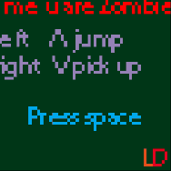

Привет! Меня зовут Манахов Надир (Dontre). Это моя личная страничка, она в процессе заполнения

|
Ticker
2016
Play
Простенькая казуальная игра, в которой вам необходимо преодолевать препядствия, управляя маятником.Готовится к выпуску в AppStore и Google Play.
|
|  |
2015
ForMeUAreZombie
Play
Jar44kb
Source
Игра для конкурса Ludum Dare 32. Он проходил с 17 по 20 апреля. Скорее всего у вас не получится сыграть в браузере, поскольку Java Applet`ы уже не поддерживаются некоторыми браузерами. СОВЕТУЮ скачать и запустить jar файл.
|

|
2014
Dont Surrender
Play
Jar70kb
Source
Игра для конкурса Ludum Dare 31. Он проходил с 5 по 8 декабря. Игра делалась на Java. Затем была попытка переделать её на Unity.
|